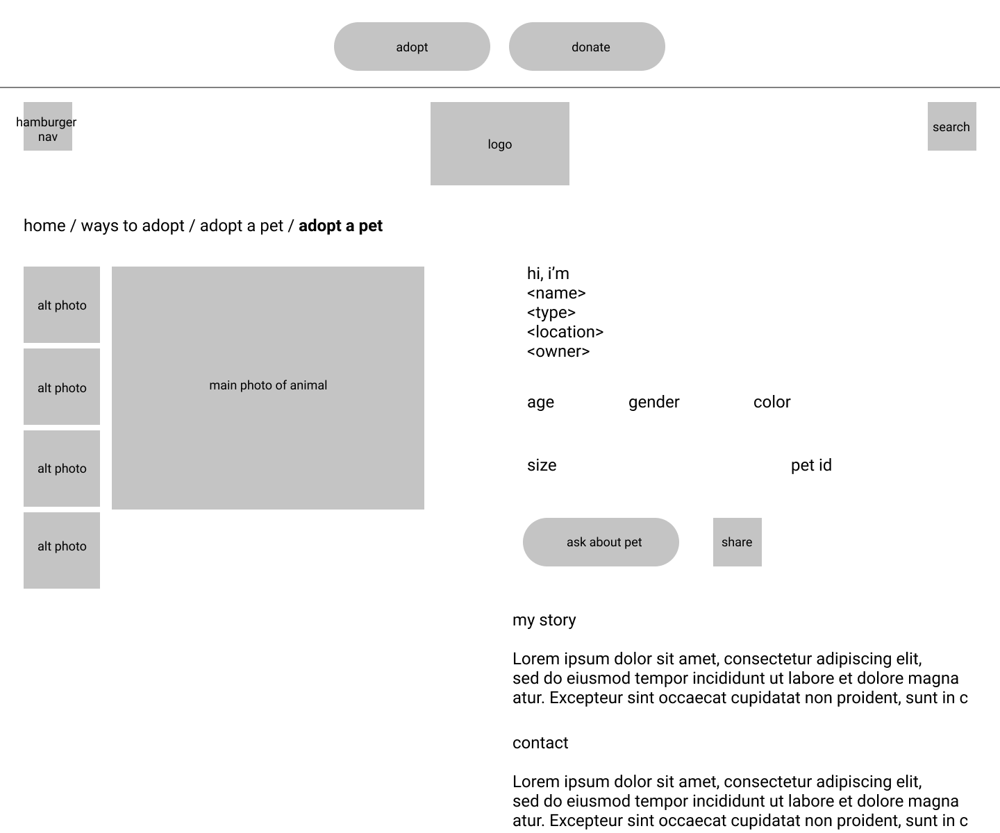
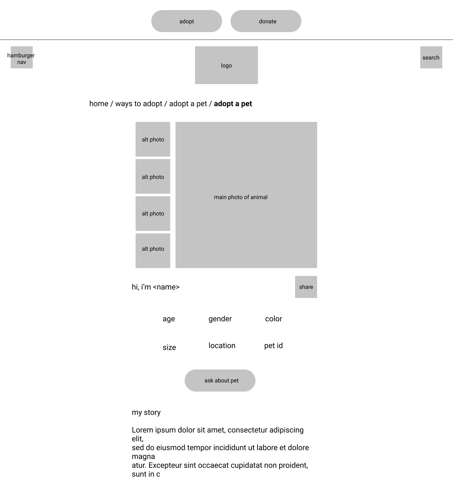

-
Using the favorite website you chose in homework 1, create a wireframe for one page of it using pen/paper, PowerPoint, or any your tool of choice. (use the 'img' tag!) Make sure to let us know what the name of your website is (Use the 'p' tag!)
A super cute puppy adoption website.
-
Try to improve the website you've chosen, and create a redesigned wireframe of one page for the same website using the principles of visual hierarchy that you learned from the article.
My modification to the adoption website using whitespace and page layout principles.
-
What is the goal of the website? Who is it intended for? How does the design accomplish this? Write 2-3 sentences answering these questions. (Use the 'p' tag again!)
The main goal of this website is to help puppies get adopted from local shelters. The intended audience, for this particular part of the site, is for those browsing and wanting to adopt a puppy. The design accomplishes this by showing cute pictures of the puppy, giving the exact details of him/her, and showing how to contact the owner.
-
Write 2-3 sentences about what problems your redesign addressed, and how it solved them.
The original layout of the page was a bit unorganized as all the wordy information was on one side of the screen, and all the images and header information is on the other side. This causes viewers to feel overwhelmed by the amount of content there is and confused on where to look, even if the site does use white space. My redesign helped to group the elements together and center them so that the user knows what to view at all times.
NOTE: Make sure to include the wireframe images in the website and don't just put it in your assets folder!
Your wireframes should look something like this: